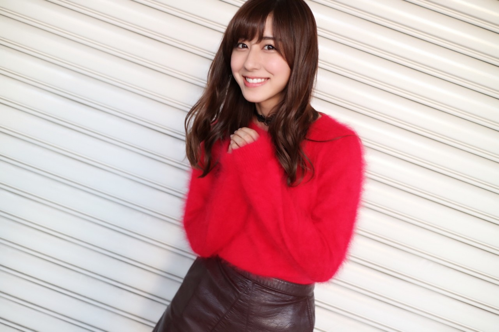
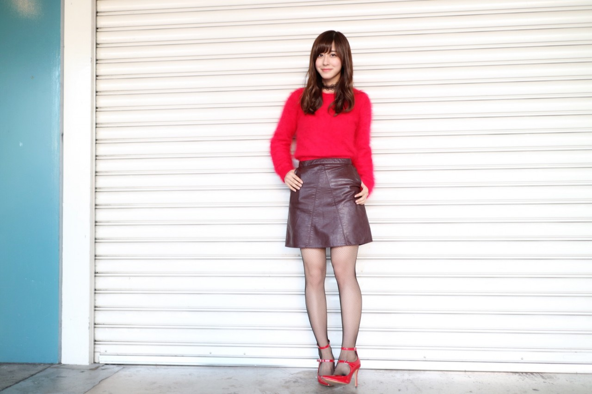
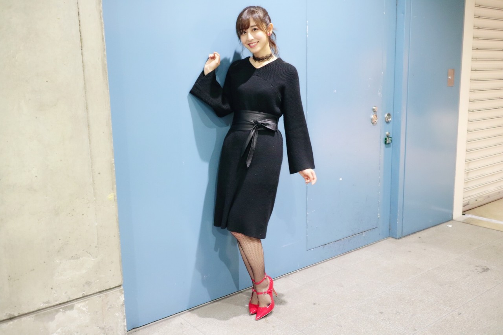
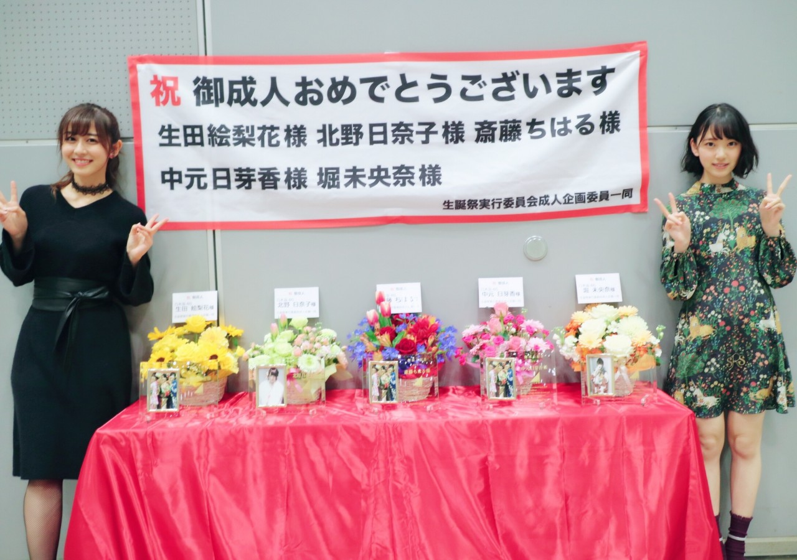
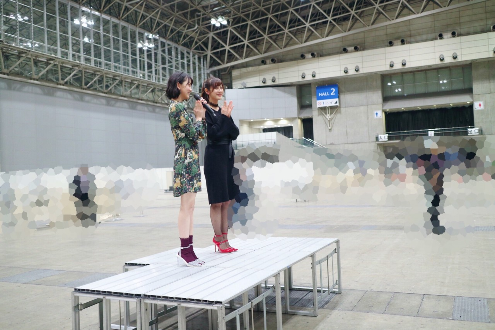

| 2017/01 22 Sun | 斎藤ちはる 赤がテーマ。 |
ちはるーむへようこそ
今日は個別握手会in 幕張メッセでした〜◎
東京では今年初めての握手会！
東京の皆さんと久しぶりにお会い出来て嬉しかったです！
元気な顔をちゃんと間近で見られました☺︎
先週来て下さった方もいて
わざわざ遠征して来てくれたんだなと思うと
私は幸せ者だなと思います☺︎
そして沢山の方が
「今日列凄いね〜良かったね！」と
嬉しそうに報告してくださって
私も嬉しくなりましたヽ(；；)丿
本当に嬉しいな〜♡♡
次の17thでは部数が増えたらいいな。
もっと沢山の方にお会いしたい！
そして今来てくれてる皆さんと
もっとじっくりとお話がしたい！
#chihaOOTD
今日は赤がテーマの日でした◎
4部


tops : Another Edition
skirt : ZARA
shoes : CHARLES & KEITH
choker : EAT ME
この冬一番のお気に入りの
トップス(通称赤モコちゃん)を
今日は着てみました◎
NOGIBINGO!7の、大学密着の時に
ライダースジャケットの下に着ていたり、
先週の京都で雪が降った時に
雪を服に乗せたときに着ていたり、
今考えてみれば沢山お披露目してたなぁ笑
暖かくて柔らかくてふわふわで
合わせやすくてオススメです！
確か他の色もあったと思う！
5部

one-piece : Another Edition
shoes : CHARLES & KEITH
choker : EAT ME
earring : PLAZA
先日の乃木中の成人企画の時に
着ていたワンピース！
赤い靴と赤いイヤリングをポイントにして
黒いタイツを網タイツに変えて
乃木中の日よりも春を意識しました。
少しだけだけど！
最近太いベルトが流行っていて
ずっと気になっていたので買おうと思ってたところに
このベルト付きのワンピースを見つけて
凄い嬉しかったのを覚えています〜
お得〜♡
ベルトだけでも使えるし、
実はこのワンピース前後ろ逆でも着られるので
着まわしが効くんです！
これもまたオススメ！
そして5部終わりでは
成人のご挨拶を未央奈とさせて頂きました。


いくちゃん、めーちゃん、きいが
参加出来なくて少し寂しかったですが
直接皆さんに成人の抱負を述べられて
良い機会になりました( ¨̮ )
それぞれのサイリウムカラーの
お花も素敵でした！！
私たちのために企画して下さった皆さん
わざわざ残ってお祝いして下さった皆さん
ありがとうございました◎
------------------------------------------♡
♬ ChihaMusic
「何度でも」DREAM COME TRUEさん
辛い時苦しい時に聞いたら
頑張ろうと思える曲。
受験生の皆さんには息抜きに聞いて欲しい。
受験生が周りにいる家族、お友達の皆さんは
是非聞かせてあげて欲しい。
コツコツするのは辛いけど
諦めたらそこで終わりだもんね。
"10000回だめでへとへとになっても
10001回目は何か変わるかもしれない"
この言葉が大好き！
私もへとへとになること沢山あるけど
何か変わるかもしれない、
その望みを捨てずに頑張る。
この後の乃木坂工事中にも
参加しているので是非見てください◎
そして今日はいくちゃんの誕生日！
今日会えないので朝メールしました☺︎
いくちゃんがもう２０歳なんて(> <)
びっくり(> <)
お誕生日おめでとう。
一緒に素敵な大人の女性になろうね！
そしてまいちゅんも誕生日！
写真撮ったので後日載せます♡
一番年上だけどみんなに好かれて
いじられるまいちゅんが大好き！
斎藤ちはる